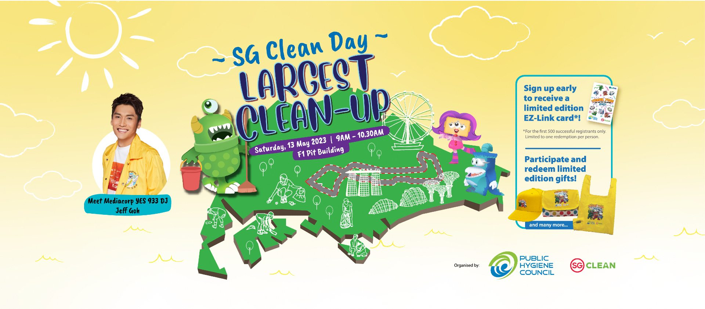

Singapore Polytechnic
About SP
Singapore Polytechnic was set up on 27 October 1954, making it the very first polytechnic to be established in Singapore.
Singapore Polytechnic started out right in the heart of the financial district. Today, the polytechnic is located strategically in Dover Road - in the educational belt and science hub in the western part of Singapore. Our graduates have contributed significantly to Singapore's economic and industrial growth and many are now well-known entrepreneurs. Others hold positions of responsibility and leadership in industry, business and in public organisations.
We may be the oldest Polytechnic but the pioneering spirit is kept very much alive. Look around our campus. We are constantly refurbishing the buildings and facilities to ensure that they are up to date and well equipped for training students in the new industries and emerging technologies.
The change and development is not limited to the physical. Our underlying philosophy and leadership provide the direction for our vision.
What SP has done
SP Environment Club
It’s all in the name! The SP Environment Club (SPENV) is a CCA group concerned about the natural environment. SPENV is committed to promoting environmental awareness and a sustainable lifestyle both on campus and beyond. We organise many green campaigns and projects meant to make a difference in SP, such as roadshows and out of school trails.
We welcome any and all efforts in bettering the environment, so join us if you have ideas and want to help turn students into proper stewards of the environment.
Contact Us:
Email Address: sp_env@ichat.sp.edu.sg
Instagram: @sp_env
Events
SG Clean Day

Joining hands with the Public Hygiene Council (PHC) on SG Clean Day, 1000 SP students took part in an epic clean-up event at F1 Pit Building on 13th May 2023! Together, we shattered records for the largest island-wide clean-up effort in the Singapore Book of Records, but it shouldn't stop there! It's time to ignite conversations about caring for our living spaces and inspire a new wave of compassionate youth to step up as champions for a cleaner, more sustainable future. Let's keep the momentum going!
From Pledges to Progress

4
Green Mark Platinum Buildings
T18A, T18B, T3B and the SP Sports Arena have been certified Green Mark Platinum with on-going efforts to certify all 22 buildings in SP by 2025.

230
Species of Flora
SP's lush campus is home to an incredible biodiversity of plants including our majestic Brown Woolly Fig Heritage Trees found near Food Court 1.

110+
Water Dispensers
We cultivate eco-conscious habits by encouraging students and staff to use water dispensers around campus and have ceased the use of plastic bottled water at our events.

500+
Smart Sensors
Many facilities on campus are monitored with smart sensors to track human traffic and monitor air quality for the health and well-being of students and staff.
4
Smart Offices
Enhancing the work environment for the health and well-being of our staff through air quality and temperature sensors in our offices.

13
Diplomas featuring Common Core Curriculum (CCC)
The CCC prepares our students for the green economy by exposing them to inter-disciplinary learning experiences and global issues, framed by the SG Green Plan and the United Nations’ Sustainable Development Goals, where they will learn to develop prototype sustainability solutions for real-life issues.